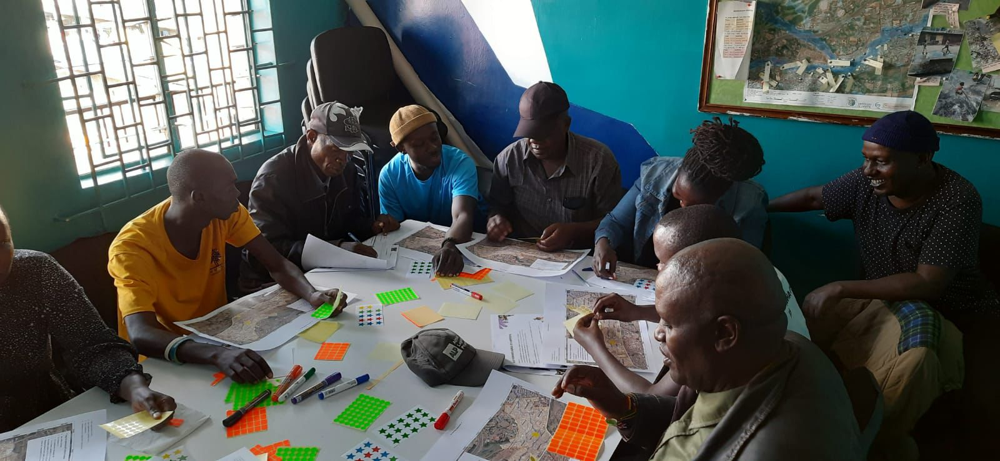
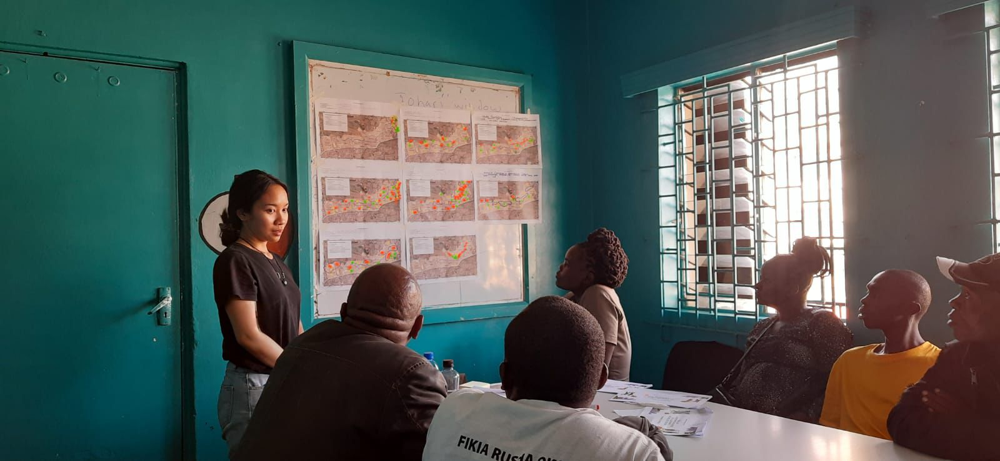

Background
Mathare, one of Nairobi's largest informal settlements and home to over 230,000 residents, faces recurrent flooding along the river corridor. The devastating 2024 floods displaced thousands and exposed critical gaps in disaster risk management. In this context, limitations in formal disaster response coverage and early warning systems have contributed to community-based organizations (CBOs) playing an increasingly important role as key actors in disaster survival.
As climate induced disasters intensify, understanding grassroots mechanisms like community based organizations, or CBOs, becomes critical for saving lives, reducing disaster risk, and complementing formal disaster risk management systems, which in turn can inform more effective disaster policy. This research looks at how community-based organizations and social capital help bridge these gaps in Mathare's disaster preparedness and response.
Methods
Data was developed through 14 interviews, 39 household surveys, field observations, and a participatory mapping workshop conducted during MSc thesis research in Mathare, Nairobi.


Key Findings
Social capital, broadly defined as the networks, relationships, and norms of trust and reciprocity that bind communities together, serves as a form of social infrastructure underpinning collective action. In particular, networks among families and groups play a crucial role in mobilising community-led initiatives, including preparedness training, river cleanup, and information dissemination.
CBOs, in this context, emerge as the primary responders on the ground, providing early warnings, coordinating evacuations, and distributing aid when formal coverage falls short. For example, a CBO based upstream might alert a CBO downstream when flooding starts, giving residents precious extra time to prepare. CBOs with stronger and wider networks are often able to draw on that social capital to mobilize a faster, more coordinated response, connecting people, resources, and information across the settlement.
Try it: click the individual CBO names under "Champions_Network" in the layer legend below to toggle their connections on and off — this reveals each organisation's social capital network across Mathare.